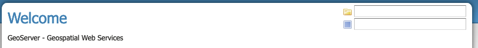

Configuration Considerations
Use production logging
Logging may visibly affect the performance of your server. High logging levels are often necessary to track down issues, but by default you should run with low levels. (You can switch the logging levels while GeoServer is running.)
You can change the logging level in the Logging Profile. You will want to choose the PRODUCTION logging configuration, where only problems are written to the log files.
Logging configuration hardening
For production systems, it is advised to set GEOSERVER_LOG_LOCATION parameter during startup. The value may be defined as either an environment variable, java system property, or servlet context parameter.
The location set for GEOSERVER_LOG_LOCATION has priority, causing the value provided using the Admin Console GUI or REST API to be ignored. This approach establishes a separation of responsibility between those setting up and controlling the actual machine, and those configuring the GeoServer application.
See Advanced log configuration for more information.
Set a service strategy
A service strategy is the method in which output is served to the client. This is a balance between proper form (being absolutely sure of reporting errors with the proper OGC codes, etc.) and speed (serving output as quickly as possible). This is a decision to be made based on the function that GeoServer is providing. You can configure the service strategy by modifying the web.xml file of your GeoServer instance.
The possible strategies are:
| Strategy | Description |
SPEED |
Serves output right away. This is the fastest strategy, but proper OGC errors are usually omitted. |
BUFFER |
Stores the whole result in memory, and then serves it after the output is complete. This ensures proper OGC error reporting, but delays the response quite a bit and can exhaust memory if the response is large. |
FILE |
Similar to BUFFER, but stores the whole result in a file instead of in memory. Slower than BUFFER, but ensures there won't be memory issues. |
PARTIAL-BUFFER |
A balance between BUFFER and SPEED, this strategy tries to buffer in memory a few KB of response, then serves the full output. |
Personalize your server
This isn't a performance consideration, but it is just as important. In order to make GeoServer as useful as possible, you should customize the server's metadata to your organization. It may be tempting to skip some of the configuration steps, and leave in the same keywords and abstract as the sample, but this will only confuse potential users.
Suggestions:
- Fill out the WFS, WMS, and WCS Service Metadata sections (this info will be broadcast as part of the capabilities documents)
- Serve your data with your own namespace (and provide a correct URI)
- Remove default layers (such as
topp:states)
Configure service limits
Make sure clients cannot request an inordinate amount of resources from your server.
In particular:
- Set the maximum amount of features returned by each WFS GetFeature request (this can also be set on a per featuretype basis by modifying the layer publishing wfs settings).
- Set the WMS request limits so that no request will consume too much memory or too much time
- Set WPS limits, so no process will consume too much memory or too much time. You may also limit the size input parameters for further control.
Set security for data modification
GeoServer includes support for WFS-T (transactions) by default, which lets users modify your data.
If you don't want your database modified, you can turn off transactions in the WFS settings. Set the Service Level to Basic. For extra security, we recommend any database access use datastore credentials providing read-only permissions. This will eliminate the possibility of a SQL injection (though GeoServer is generally not vulnerable to that sort of attack).
If you would like some users to be able to modify data, set the service level Service Level to Transactional (or Complete) and use Service Security to limit access to the WFS.Transaction operation.
If you would like some users to be able to modify some but not all of your data, set the Service Level to Transactional (or Complete), and use Layer security to limit write access to specific layers. Data security can be used to allow write access based on workspace, datastore, or layer security.
Cache your data
Server-side caching of WMS tiles is the best way to increase performance. In caching, pre-rendered tiles will be saved, eliminating the need for redundant WMS calls. There are several ways to set up WMS caching for GeoServer. GeoWebCache is the simplest method, as it comes bundled with GeoServer. (See the section on GeoWebCache for more details.) Another option is TileCache.
You can also use a more generic non-spatial caching system, such as OSCache (an embedded cache service) or Squid (a web cache proxy).
Caching is also possible for WFS layers, in a very limited fashion. For DataStores that don't have a quick way to determine feature counts (e.g. shapefiles), enabling caching can prevent querying a store twice during a single request. To enable caching, set the Java system property org.geoserver.wfs.getfeature.cachelimit to a positive integer. Any data sets that are smaller than the cache limit will be cached for the duration of a request, which will prevent the dataset from being queried a second time for the feature count. Note that this may adversely affect some types of DataStores, as it bypasses any feature count optimizations that may exist.
Welcome page selectors
The workspace and layer selectors might take a lot of time to fill up against large catalogs. Because of this, GeoServer tries to limit the time taken to fill them (by default, 5 seconds), and the number of items in them (by default, 1000), and will fall back on simple text fields if the time limit is reached.
In some situations, that won't be enough and the page might get stuck anyways. The following properties can be used to tweak the behavior:
GeoServerHomePage.selectionMode: can be set totextto always use simple text fields,dropdownto always use dropdowns, orautoto use the default automatic behavior.GeoServerHomePage.selectionTimeout: the time limit in milliseconds, defaults to5000.GeoServerHomePage.selectionMaxItems: the maximum number of items to show in the dropdowns, defaults to1000.
When using text selection mode the page description is static, no longer offering of available workspace and layers.

Welcome page text selection modeDisable the GeoServer web administration interface
In some circumstances, you might want to completely disable the web administration interface. There are two ways of doing this:
- Set the Java system property
GEOSERVER_CONSOLE_DISABLEDto true by adding-DGEOSERVER_CONSOLE_DISABLED=trueto your container's JVM options - Remove all of the
gs-web*-.jarfiles fromWEB-INF/lib
Disable the Auto-complete on web administration interface login
To disable the Auto Complete on Web Admin login form:
- Set the Java system property
geoserver.login.autocompleteto off by adding-Dgeoserver.login.autocomplete=offto your container's JVM options - If the browser has already cached the credentials, please consider clearing the cache or form data after setting the JVM option.
Disable anonymous access to the layer preview page
In some circumstances, you might want to provide access to the layer preview page to authenticated users only. The solution is based on adding a new filter chain with a rule matching the path of the layer preview page to GeoServer's Authentication chain. Here are the steps to reproduce:
- Under Security -> Authentication -> Filter Chains, add a new HTML chain
- Set the new chain's name to
webLayerPreview(or likewise) - As Ant pattern, enter the path of the layer preview page, which is
/web/wicket/bookmarkable/org.geoserver.web.demo.MapPreviewPage(since it's an Ant pattern, the path could as well be written shorter with wildcards:/web/**/org.geoserver.web.demo.MapPreviewPage) - Check option Allow creation of an HTTP session for storing the authentication token
- Under Chain filters, add filters
remembermeandform(in that order) to the Selected list on the right side - Close the dialog by clicking the Close button; the new HTML chain has been added to the list of chains as the last entry
- Since all chains are processed in turn from top to bottom, in order to have any effect, the new
webLayerPreviewchain must be positioned before thewebchain (which matches paths/web/**,/gwc/rest/web/**,/) - Use the Position arrows on the left side of the list to move the newly added chain upwards accordingly
- Save the changes you've made by clicking the Save button at the bottom of the page
With that in place, unauthenticated users now just get forwarded to the login page when they click the layer preview menu item link.
The above procedure could as well be applied to other pages of the web administration interface that one needs to remove anonymous access for. For example:
- Demos -> Demo requests (path:
/web/wicket/bookmarkable/org.geoserver.web.demo.DemoRequestsPage) - Demos -> WCS request builder (path:
/web/wicket/bookmarkable/org.geoserver.wcs.web.demo.WCSRequestBuilder)
Warning
Although disabling anonymous access to the layer preview page MAY prevent some unauthenticated users from accessing data with some simple clicks, this is NOT a security feature. In particular, since other more sophisticated users, having the ability to build OGC requests, MAY still access critical data through GeoServer's services, this is NOT a replacement for a well-designed security concept based on data-level or service-level security.
X-Frame-Options Policy
In order to prevent clickjacking attacks GeoServer defaults to setting the X-Frame-Options HTTP header to SAMEORIGIN. This prevents GeoServer from being embedded into an iFrame, which prevents certain kinds of security vulnerabilities. See the OWASP Clickjacking entry for details.
If you wish to change this behavior you can do so through the following properties:
geoserver.xframe.shouldSetPolicy: controls whether the X-Frame-Options filter should be set at all. Default is true.geoserver.xframe.policy: controls what the set the X-Frame-Options header to. Default isSAMEORIGINvalid options areDENY,SAMEORIGINandALLOW-FROM[uri]
These properties can be set either via Java system property, command line argument (-D), environment variable or web.xml init parameter.
X-Content-Type-Options Policy
In order to mitigate MIME confusion attacks (which often results in Cross-Site Scripting), GeoServer defaults to setting the X-Content-Type-Options: nosniff HTTP header. See the OWASP X-Content-Type-Options entry for details.
If you wish to change this behavior you can do so through the following property:
geoserver.xContentType.shouldSetPolicy: controls whether the X-Content-Type-Options header should be set. Default is true.
This property can be set either via Java system property, command line argument (-D), environment variable or web.xml init parameter.
OWS ServiceException XML mimeType
By default, OWS Service Exception XML responses have content-type set to application/xml.
In case you want it set to text/xml instead, you need to setup the Java System properties:
-Dows10.exception.xml.responsetype=text/xmlfor OWS 1.0.0 version-Dows11.exception.xml.responsetype=text/xmlfor OWS 1.1.0 version
FreeMarker Template Auto-escaping
By default, FreeMarker's built-in automatic escaping functionality will be enabled to mitigate potential cross-site scripting (XSS) vulnerabilities in cases where GeoServer uses FreeMarker templates to generate HTML output and administrators are able to modify the templates and/or users have significant control over the output through service requests. When the GEOSERVER_FORCE_FREEMARKER_ESCAPING property is set to false, auto-escaping will delegate either to the feature's default behavior or other settings which allow administrators to enable/disable auto-escaping on a global or per virtual service basis. This property can be set to false either via Java system property, command line argument (-D), environment variable or web.xml init parameter.
This setting currently applies to the WMS GetFeatureInfo HTML output format and may be applied to other applicable GeoServer functionality in the future.
Warning
While enabling auto-escaping will prevent XSS using the default templates and mitigate many cases where template authors are not considering XSS in their template design, it does NOT completely prevent template authors from creating templates that allow XSS (whether this is intentional or not). Additional functionality may be added in the future to mitigate those potential XSS vulnerabilities.
External Entities Resolution
When processing XML documents from service requests (POST requests, and GET requests with FILTER and SLD_BODY parameters) XML entity resolution is used to obtain any referenced documents. This is most commonly seen when the XML request provides the location of an XSD schema location for validation).
GeoServer provides a number of facilities to control external entity resolution:
-
By default
httpandhttpsentity resolution is unrestricted, with access to localfilereferences prevented. -
To restrict
httpandhttpsentity resolution:-DENTITY_RESOLUTION_ALLOWLISTThe built-in allow list includes w3c, ogc, and inspire schema locations:
www.w3.org|schemas.opengis.net|www.opengis.net|inspire.ec.europa.eu/schemasIn addition the proxy base url is included, if available from global settings.
Access to local
filereferences remains restricted. -
To allow additional external entity
httpandhttpslocations use a comma or bar separated list:-DENTITY_RESOLUTION_ALLOWLIST=server1|server2|server3/schemas -
To turn off all restrictions (allowing
http,https, andfilereferences) use the global setting Unrestricted XML External Entity Resolution.This setting prevents
ENTITY_RESOLUTION_ALLOWLISTfrom being used.
Spring Security Firewall
GeoServer defaults to using Spring Security's StrictHttpFirewall to help improve protection against potentially malicious requests. However, some users will need to disable the StrictHttpFirewall if the names of GeoServer resources (workspaces, layers, styles, etc.) in URL paths need to contain encoded percent, encoded period or decoded or encoded semicolon characters. The GEOSERVER_USE_STRICT_FIREWALL property can be set to false either via Java system property, command line argument (-D), environment variable or web.xml init parameter to use the more lenient DefaultHttpFirewall.
Static Web Files
GeoServer by default allows administrators to serve static files by simply placing them in the www``` subdirectory of the GeoServer data directory. If this feature is not being used to serve HTML/JavaScript files or is not being used at all, the ````GEOSERVER_DISABLE_STATIC_WEB_FILES```` property can be set to true to mitigate potential stored XSS issues with that directory. See the \Serving Static Files \<../tutorials/staticfiles.rst>``_ page for more details.
Session Management
GeoServer defaults to managing user sessions using cookies with the HttpOnly flag set to prevent attackers from using cross-site scripting (XSS) attacks to steal a user\'s session token. You can configure the session behavior by modifying the `web.xml` file of your GeoServer instance.
It is strongly recommended that production environments also set the Secure flag on session cookies. This can be enabled by uncommenting the following in the `web.xml` file if the web interface is only being accessed through HTTPS but the flag may need to be set by a proxy server if the web interface needs to support both HTTP and HTTPS.